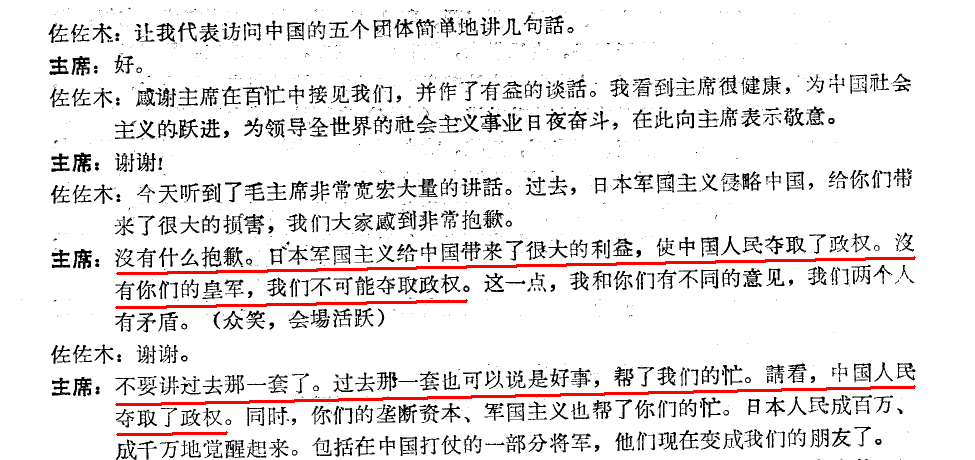

前几天恰逢二战胜利65周年，国共两党又一次打起口水战。起因是《人民日报》9月2日的社论（在“这里”），把共党吹嘘成中国抗日的主要领导者。
国民党的马英九实在看不下去了，也喷了一通口水（请翻墙看“这里”）。
其实这个问题的答案是明摆着的。然而，伟光正领导下的真理部，总是拥有颠倒黑白的能耐，很多网友经常被真理部唬得一楞一楞的。所以，今天想来聊一下，真理部篡改了哪些抗战历史。
在《日人民报》的“这篇社论”中，大言不惭地说（以下是原话，一字不差）：
猛一看，感觉伟光正真是太牛逼了。好像整个8年抗战都是伟光正领导的。真是这么回事儿吗？
为了戳穿伟光正的谎言，俺先借助一下维基百科。它是全球最大，且比较客观的百科网站。咱们来看看它是咋说滴。
俺上去查了一下关于“中国抗日战争”的词条（洋文在“这里”、中文在“这里”）。在这两个词条中，都强调“中华民国（Republic of China）”是参战方/战胜国。那会儿，国民党是中华民国的执政党（这是真理部也无法否认的）。
在主要指挥官一栏，中国方面列出的10来个人，大都是是国民党将领（以蒋光头为首），只有2个是共产党将领（朱德、彭德怀），还排在最末尾。
接着，俺再去查了一下“第二次世界大战”（World War II）的词条。洋文在“这里”、中文在“这里”。里面提到：主要的同盟国领导人分别是：美国的罗斯福、苏联的斯大林、英国的丘吉尔、中国的蒋介石。
再来看看老蒋的头衔。蒋光头不仅是中华民国的委员长，还以大元帅身份行使最高统帅权。另外，中缅印战区的最高统帅也是老蒋，在这一战区的美国佬部队，也得听老蒋指挥。
从上述介绍，你应该可以看出，谁才是中国抗战的实际领导者。
咱们天朝的历史教科书，很少提及国民党军队积极抗战的事迹。不提也就罢了，伟光正在各种抗日宣传中，经常拿国军的败仗来说事儿（比如韩复渠放弃山东、比如豫湘桂战役）。以此来暗示国民党军队“总是”不堪一击，见到日军就望风而逃、一溃千里。所以捏，很多大陆网友以为国民党的部队在那8年里，没干啥事儿。
反过来，伟光正对八路军和新四军的作用，进行了添油加醋的渲染。屁大的事儿（比如平型关大捷）也拿出来大肆炫耀。
为了让网友们有一个直观的认识，俺又到网上搜罗了一些数据。通过这些数据的对比，你应该有所体会。
通常，交战双方都倾向于夸大自己一方的战绩。所以，为了对比国共两党的战报，就需要拿日本人的战报作为参照系。虽然按照惯例，日军战报也会有意缩小自己的损失。但是通过国共两军战报分别与日军战报的对比，可以看出，谁掺水更多。
先来看八路的战报（以下是网上能找到的部分）
再来看看国民党军队的战报（仅包括规模较大的战役）
通过这2个列表，明显可以看出两点：
1. 共军的战报和日军的战报，差距巨大（通常都超几十倍）；而国军和日军的战报，通常误差都在一个数量级（10倍）之内。
2. 共军的战斗基本属于小打小闹。即使是伟光正广为宣传的平型关，也不过歼灭日军1000人（而且这个数字，多半还是有水分滴）。
再来看看两党的阵亡将领。维基百科上正好有一个“抗日战争牺牲者列表”，大伙儿有兴趣的话，可以去瞅瞅。里面的高级将领，大都属于国民党部队，只有少数是共产党的将领。
国民党阵亡的上将10人、中将50人、少将70多人。加起来有130多人。而属于共产党部队的高级将领，包括八路军（后番号改为第十八集团军）、新4军、东北抗联等部队，不足10人。
考虑到很多国内网友对国军的事迹不够了解，俺再从网上摘录几段给大伙儿瞧一瞧。
以下文字摘录自《60多年过去了，又有多少中国人知道这些？》一文（该文的作者，俺没考证出来）。
＝＝＝＝＝＝＝＝华丽的分割线＝＝＝＝＝＝＝＝
再来看看共产党军队都干了些啥。
共产党的各路人马（八路军、新四军）在八年抗战中，拿得出手的事情，也就两件：平型关大捷和百团大战。
所谓的平型关大捷，只不过是伏击了日军的一个运输队。既然伟光正宣称击毙日军千余人。按照惯例、真实数字最多也就几百人。
所谓的百团大战，即便按照伟光正宣传的数字是：毙伤日军2万余人。既然是【毙伤】2万，真正击毙的，估计也就2千至3千。100多个团，才干掉两三千日军。大伙儿只需用“4位数以内的除法”，简单算一下，每个团才干掉几个日军——这也好意思称为“大战”？
1937抗战爆发时，红军刚刚长征到陕北不久，喘息未定。那时红军不到5万人，而老蒋手头有几百万正规军。双方实力极其悬殊。
而到了1945年日本投降时，八路军已经发展到130万，另有260万民兵武装（数据来自官方的新华网）。合计近400万，已经和老蒋的正规军，不相上下了。
很明显，伟光正利用这8年的抗战，来避开日军的锋芒，并在后方暗中壮大自己。最终才获得了和老蒋一决雌雄的实力。
可能有人会说，前述所言仅仅是推测。那咱就接着来看看，老毛在党内高层会议上，透露的心声。
以下这些老毛的语录，也是网上搜罗的。可能有一两句未必是老毛的原话，但是大体上可以反映出老毛的如意算盘。
上述讲话未必是老毛的原话，但大概意思应该差不离。老毛在这次会议的讲话【原文】，官方一直【没】公布。不过捏，根据其它官方材料还有张国焘、李德等当事人的回忆，可以分析出老毛在洛川讲话的大概意思。
另外，有某网友考证了老毛洛川会议讲话的真伪（在“这里”），大伙儿可以参考一下。
一九六四年七月十日，日本社会党委员长佐佐木更三偕委员黑田寿男去北京，与毛泽东有下面一段对话（摘自《毛泽东思想万岁》，第139页）：
感谢某网友附上本书的 PDF 扫描版链接，该页的截图如下（原书第139页，对应扫描版的第152页）

看完老毛的如意算盘，大伙儿知道老毛的阴险狡诈了吧？难怪蒋光头不是他的对手，连江山都丢了。
那年中日建交，日本的田中首相在同老毛有如下谈话：（出自《田中角荣传》，必须查【日语原版】，中文版已经被删减了）
反乌托邦的代表作《1984》里面有句经典名言：
俺博客上，和本文相关的帖子（需翻墙）：
《谁是最可恨的人？——写给仇日愤青们》
《谈谈真理部对朝鲜战争的忽悠》
《看看真理部是如何 PS 照片的》
《二战中日本是如何崩溃的？——兼谈中国战区的作用被夸大》
《聊聊二战中的日本——分析各方面的优势劣势》
国民党的马英九实在看不下去了，也喷了一通口水（请翻墙看“这里”）。
其实这个问题的答案是明摆着的。然而，伟光正领导下的真理部，总是拥有颠倒黑白的能耐，很多网友经常被真理部唬得一楞一楞的。所以，今天想来聊一下，真理部篡改了哪些抗战历史。
★谁是抗战领导者？
在《日人民报》的“这篇社论”中，大言不惭地说（以下是原话，一字不差）：
在那场威武雄壮的战争中，中国共产党以自己的坚定意志和模范行动，在全民族抗战中发挥了中流砥柱的作用。中国人民之所以创造了弱国战胜强国的伟大奇迹，最根本的原因，是中国共产党代表全中国人民的意志，领导和推动了伟大的抗日战争，以自己最富于牺牲精神的爱国主义、不怕流血牺牲的模范行动，支撑起全民族救亡图存的希望，成为夺取抗战胜利的民族先锋。（注：由于这段话实在太肉麻，俺已经把它补充到《汇总最近几年天朝的雷人语录》）
猛一看，感觉伟光正真是太牛逼了。好像整个8年抗战都是伟光正领导的。真是这么回事儿吗？
为了戳穿伟光正的谎言，俺先借助一下维基百科。它是全球最大，且比较客观的百科网站。咱们来看看它是咋说滴。
俺上去查了一下关于“中国抗日战争”的词条（洋文在“这里”、中文在“这里”）。在这两个词条中，都强调“中华民国（Republic of China）”是参战方/战胜国。那会儿，国民党是中华民国的执政党（这是真理部也无法否认的）。
在主要指挥官一栏，中国方面列出的10来个人，大都是是国民党将领（以蒋光头为首），只有2个是共产党将领（朱德、彭德怀），还排在最末尾。
接着，俺再去查了一下“第二次世界大战”（World War II）的词条。洋文在“这里”、中文在“这里”。里面提到：主要的同盟国领导人分别是：美国的罗斯福、苏联的斯大林、英国的丘吉尔、中国的蒋介石。
再来看看老蒋的头衔。蒋光头不仅是中华民国的委员长，还以大元帅身份行使最高统帅权。另外，中缅印战区的最高统帅也是老蒋，在这一战区的美国佬部队，也得听老蒋指挥。
从上述介绍，你应该可以看出，谁才是中国抗战的实际领导者。
★国共两军的作用对比
咱们天朝的历史教科书，很少提及国民党军队积极抗战的事迹。不提也就罢了，伟光正在各种抗日宣传中，经常拿国军的败仗来说事儿（比如韩复渠放弃山东、比如豫湘桂战役）。以此来暗示国民党军队“总是”不堪一击，见到日军就望风而逃、一溃千里。所以捏，很多大陆网友以为国民党的部队在那8年里，没干啥事儿。
反过来，伟光正对八路军和新四军的作用，进行了添油加醋的渲染。屁大的事儿（比如平型关大捷）也拿出来大肆炫耀。
为了让网友们有一个直观的认识，俺又到网上搜罗了一些数据。通过这些数据的对比，你应该有所体会。
◇战报对比
通常，交战双方都倾向于夸大自己一方的战绩。所以，为了对比国共两党的战报，就需要拿日本人的战报作为参照系。虽然按照惯例，日军战报也会有意缩小自己的损失。但是通过国共两军战报分别与日军战报的对比，可以看出，谁掺水更多。
先来看八路的战报（以下是网上能找到的部分）
| 战斗 | 八路战报 | 日军战报 | 日军战报出处 | |
|---|---|---|---|---|
| 1 | 平型关战斗 | 歼灭日军1000余人（一开始吹嘘“歼敌上万”，后来才降为一千） | 日军亡167人，伤94人 | 儿岛襄著《日中战争》 |
| 2 | 广阳伏击战 | 歼日军千余人 | 日军伤亡63人 | 臼井胜美著《中日战争》 |
| 3 | 晋察冀区反八路围攻 | 歼灭日伪军2000余人 | 日军亡17人，伤52人；皇协军伤亡69人 | 臼井胜美著《中日战争》 |
| 4 | 三次破袭平汉铁路 | 歼灭日伪军1200余人 | 日军亡2人，伤11人，无皇协军伤亡报告 | 《支那事变陆军作战》 |
| 5 | 冀中1938年春季反扫荡 | 歼灭日伪军1000余人 | 日军亡6人，伤26人，皇协军伤亡71人 | 《华北治安战》 |
| 6 | 120师收复晋西北七城战役 | 歼灭日伪军1500余人 | 日军亡22人，伤51人，皇协军伤亡101人 | 《华北治安战》 |
| 7 | 易(县)涞(源)战斗 | 歼日伪军1400余人 | 日军亡9人，伤22人，皇协军伤亡40人 | 《支那事变陆军作战》 |
| 8 | 129师晋东南反日军九路围攻 | 歼日伪军4000余人 | 日军亡11人，伤10人，皇协军伤亡79人 | 《华北治安战》 |
| 9 | 晋察冀区1938年秋反围攻 | 毙伤日伪军5000余人 | 日军亡39人，伤132人，皇协军伤亡107人 | 臼井胜美著《中日战争》 |
| 10 | 冀中区五次反围攻 | 歼日伪军5500余人 | 日军亡21人，伤65人，皇协军伤亡99人 | 臼井胜美著《中日战争》 |
| 11 | 冀南1938年反扫荡 | 毙俘日伪军600余人 | 日军亡3人，伤11人，皇协军伤亡16人 | 臼井胜美著《中日战争》 |
| 12 | 冀南春季反十一扫荡 | 歼日伪军3000余人 | 日军亡37人，伤70人，皇协军伤亡81人 | 臼井胜美著《中日战争》 |
| 13 | 115师陆房突围 | 毙伤日伪军1300余人 | 日军亡10人，伤122人，皇协军伤亡67人 | 《华北治安战》 |
| 14 | 五台山区1939年5月反围攻 | 歼灭日军宫崎部队800余人 | 日军亡4人，伤27人 | 《华北治安战》 |
| 15 | 太行区1939年夏季反扫荡 | 歼日伪军2000余人 | 日军亡7人，伤37人，皇协军伤亡70人 | 《华北治安战》 |
| 16 | 冀中1939年冬季反扫荡 | 歼日伪军2500余人 | 日军亡27人，伤89人，皇协军伤亡71人 | 《华北治安战》 |
| 17 | 北岳区1939年冬季反扫荡 | 毙伤日伪军3600余人 | 日军亡9人，伤34人，皇协军伤亡95人 | 《华北治安战》 |
| 18 | 平西区1940年春季反扫荡 | 歼灭日伪军800余人，击落日军飞机1架 | 日军亡8人，伤40人，皇协军伤亡22人 | 《华北治安战》 |
| 19 | 冀中1940年春季反全面扫荡 | 毙伤日伪军3000余人 | 日军亡11人，伤91人，皇协军伤亡62人 | 《华北治安战》 |
| 20 | 鲁南区1940年反扫荡 | 毙伤日伪军2200余人 | 日军亡9人，伤60人，皇协军伤亡58人 | 《华北治安战》 |
| 21 | 129师白晋铁路破击战 | 歼日伪军600余人 | 日军亡2人，伤9人，皇协军伤亡12人 | 《华北治安战》 |
| 22 | 晋西北1940年夏季反扫荡 | 毙伤日伪军4490余人俘53人（内含日军11人） | 日军亡37人，伤107人，失踪3人，皇协军伤亡失踪201人 | 《华北治安战》 |
| 23 | 冀中1940年夏季青纱帐战役 | 毙伤日伪军2100余人俘伪军500余人 | 日军亡19人，伤22人，皇协军伤亡39人 | 《华北治安战》 |
| 24 | 百团大战 | 毙伤日军2万余人，伪军5000余人。俘日军280余人，伪军1.8万余人 | 日军亡302人，伤1719人，皇协军伤亡失踪1202人 | 《华北治安战》 |
| 25 | 太行区1940年秋季反扫荡 | 歼日伪军2800余人 | 日军亡29人，伤60人，皇协军伤亡44人 | 《华北治安战》 |
| 26 | 冀中1940年冬季攻势 | 歼日伪军2300余人 | 日军亡10人，伤27人，皇协军伤亡59人 | 《华北治安战》 |
| 27 | 太岳1940年冬季反扫荡 | 歼日伪军260余人 | 日军伤7人，皇协军伤亡15人 | 《华北治安战》 |
| 28 | 晋西北1940年冬季反扫荡 | 毙伤日伪军2500余人 | 日军亡8人，伤44人，皇协军伤亡102人 | 《华北治安战》 |
再来看看国民党军队的战报（仅包括规模较大的战役）
| 战役 | 国军战报 | 日军战报 | 日军战报出处 | |
|---|---|---|---|---|
| 1 | 淞沪会战 | 日军伤亡6万余人 | 日军在1937年公布自身死亡9115人，伤31157人，共计伤亡40672人. | （暂未找到） |
| 2 | 太原会战 | 毙伤日军4万余人 | 日军伤亡2.6万余人 | 《中国事变陆军作战史》 |
| 3 | 南京保卫战 | 毙伤日军1.5万余人 | 日军伤亡7600余人 | 《中国事变陆军作战史》 |
| 4 | 徐州会战 | 毙伤日军5万余人 | 日军在1937年承认伤亡3.2万余人 | （暂未找到） |
| 5 | 武汉会战 | 毙伤日军20万余人 | 自身伤亡3万余人，因病减员6.7万余人 | 《中国事变陆军作战史》 |
| 6 | 随枣会战 | 毙伤日军4万余人 | 日军伤亡1.3万余人 | 《中国事变陆军作战史》 |
| 7 | 枣宜会战 | 毙伤日军2.3万人 | 日军伤亡9000余人 | 《中国事变陆军作战史》 |
| 8 | 南昌会战 | 毙伤日军1.2万人 | 日军伤亡9000余人 | 《中国事变陆军作战史》 |
| 13 | 上高会战 | 毙伤日军2万人 | 日军伤亡9000余人，病减员6000人 | 《中国事变陆军作战史》 |
| 14 | 晋南(中条山)会战 | 毙伤日军9900人 | 日军损失计战死670名，负伤2292名 | 《中国事变陆军作战史》 |
| 15 | 第二次长沙会战 | 毙伤日军2万余人(也有说4万) | 日军伤亡7000余人 | 《中国事变陆军作战史》 |
| 16 | 第三次长沙会战 | 毙伤日军5万余人 | 伤亡6000人，其中死亡1600人 | 《中国事变陆军作战史》 |
| 17 | 浙赣会战 | 毙伤日军3万余人 | 日军伤亡17148人 | 《中国事变陆军作战史》 |
| 18 | 鄂西会战 | 毙伤日军4万余人 | 日军损失4000余人 | 《中国事变陆军作战史》 |
| 19 | 常德会战 | 毙伤日军5万余人 | 日军损失2万余人 | 《中国事变陆军作战史》 |
| 20 | 豫中会战 | 毙伤日军4000余人 | 日军损失3350人 | 《中国事变陆军作战史》 |
| 21 | 长衡会战 | 毙伤日军6万余人 | 日军损失6万余人 | 《中国事变陆军作战史》 |
| 22 | 桂柳会战 | 毙伤日军3万余人 | 日军损失1.6万余人 | 《战史丛书 － 大本营陆军部》 |
| 23 | 缅北会战 | 毙伤日军9万余人 | 日军伤亡4万余人 | 《中国事变陆军作战史》 |
通过这2个列表，明显可以看出两点：
1. 共军的战报和日军的战报，差距巨大（通常都超几十倍）；而国军和日军的战报，通常误差都在一个数量级（10倍）之内。
2. 共军的战斗基本属于小打小闹。即使是伟光正广为宣传的平型关，也不过歼灭日军1000人（而且这个数字，多半还是有水分滴）。
◇阵亡将领对比
再来看看两党的阵亡将领。维基百科上正好有一个“抗日战争牺牲者列表”，大伙儿有兴趣的话，可以去瞅瞅。里面的高级将领，大都属于国民党部队，只有少数是共产党的将领。
国民党阵亡的上将10人、中将50人、少将70多人。加起来有130多人。而属于共产党部队的高级将领，包括八路军（后番号改为第十八集团军）、新4军、东北抗联等部队，不足10人。
◇看看国民党军队的事迹
考虑到很多国内网友对国军的事迹不够了解，俺再从网上摘录几段给大伙儿瞧一瞧。
以下文字摘录自《60多年过去了，又有多少中国人知道这些？》一文（该文的作者，俺没考证出来）。
＝＝＝＝＝＝＝＝华丽的分割线＝＝＝＝＝＝＝＝
60多年过去了，有几个中国人知道：蒋介石动用70万国军，发动了淞沪会战。在会战中，国军空军炸毁日本海军陆战队司令部，炸沉日本海军第3舰队旗舰（编程随想注：“炸沉”有误，应为重创），国军陆军为补充战损而五次发布动员令，超过半数的团职以上高级将领，以身殉国。淞沪会战虽未能阻止日军占领上海，却改变了日军在中国战场的战略部署，还为上海资本向西转移，赢得三个月时间。＝＝＝＝＝＝＝＝华丽的分割线＝＝＝＝＝＝＝＝
60多年过去了，有几个中国人知道：最让外国人刮目相看的，不是叶挺的新四军，而是孙立人的新一军。新一军远征缅甸，以伤亡1.7万人的代价，击毙击伤日军10.9万人。在新一军攻占缅甸重镇于邦的时候，下属向孙立人询问，如何处理日军战俘，孙将军的回答是：你去问问那些狗杂种，都谁到过中国，到过中国的，就地枪毙，以后都这样办。
60多年过去了，有几个中国人知道：八路军在平型关大捷中，只不过是消灭了一支日军运输队。而且，平型关大捷只是平型关战役的一部分，平型关战役又是太原会战的一部分。
60多年过去了，有几个中国人知道：真正让日军闻风丧胆的军队是国军的委员长卫队。这支军队，使用德军的装备，在南京雨花台，委员长卫队的两个营，独自阻击日军一个甲种师团。在第二次世界大战中，日军一共只有六个甲种师团。平均每个士兵要坚守25米长的阵地，面对50名日军精锐部队的士兵，但胜利者依然是中国人。
60多年过去了，有几个中国人知道：在影视作品中恶贯满盈的张灵甫，是抗战英雄。在长沙会战中，他率领敢死队包抄小道，夜夺张古峰，为国军成功阻击日军立下汗马功劳。张灵甫还为抗战丢了一条腿。
60多年过去了，有几个中国人知道：在常德保卫战中，74军57师的8000名官兵，阻击10万日军15天之久，最后只有200人能够战斗。是时，师长发出了74军57师最后一封电报：弹尽，援绝，人无，城已破。职率副师长、师附、政治部主任、参谋部主任，死守中央银行，各团长划分区域，扼守一屋，作最后抵抗，誓死为止，并祝胜利。
60多年过去了，有几个中国人知道：在武汉上空爆发过持续时间仅次于不列颠空战的武汉空战。那场空战中，国军空军击落日军飞机78架，炸沉日军舰艇23艘。那个时候，每当防空警报响起，很多武汉市民，不是钻进防空洞，而是爬上房顶，为的是能看到日军飞机被击落的场景。
60多年过去了，有几个中国人知道：在重庆有17家军工厂，在敌机轰炸下坚持24小时不间断生产。以金陵军工厂为例，抗战期间，共生产迫击炮7000门、重机枪1.8万挺、步枪28万支、手榴弹30万枚、炸药包20万个。
60多年过去了，有几个中国人知道：日军投降书是什么样子？为什么只宣传9.18日军侵华而不宣传8.15日军投降，不让国民看看日军投降书？难道仅仅是因为文中多次出现如下文字——日本陆海空军及其辅助部队向蒋委员长投降。或者，是因为受降落款是：中国战区最高统帅特级上将蒋中正特派代表，陆军一级上将何应钦。
要知道，伟大的中国卫国战争是世界四大反法西斯战争之一！它不是用游击战、麻雀战、地道战、地雷战就能打赢的。它是用重兵集团与敌人浴血奋战才打赢的！
◇看看共产党军队的事迹
再来看看共产党军队都干了些啥。
共产党的各路人马（八路军、新四军）在八年抗战中，拿得出手的事情，也就两件：平型关大捷和百团大战。
所谓的平型关大捷，只不过是伏击了日军的一个运输队。既然伟光正宣称击毙日军千余人。按照惯例、真实数字最多也就几百人。
所谓的百团大战，即便按照伟光正宣传的数字是：毙伤日军2万余人。既然是【毙伤】2万，真正击毙的，估计也就2千至3千。100多个团，才干掉两三千日军。大伙儿只需用“4位数以内的除法”，简单算一下，每个团才干掉几个日军——这也好意思称为“大战”？
★八年抗战给共军带来啥？
1937抗战爆发时，红军刚刚长征到陕北不久，喘息未定。那时红军不到5万人，而老蒋手头有几百万正规军。双方实力极其悬殊。
而到了1945年日本投降时，八路军已经发展到130万，另有260万民兵武装（数据来自官方的新华网）。合计近400万，已经和老蒋的正规军，不相上下了。
很明显，伟光正利用这8年的抗战，来避开日军的锋芒，并在后方暗中壮大自己。最终才获得了和老蒋一决雌雄的实力。
★毛腊肉的如意算盘
可能有人会说，前述所言仅仅是推测。那咱就接着来看看，老毛在党内高层会议上，透露的心声。
以下这些老毛的语录，也是网上搜罗的。可能有一两句未必是老毛的原话，但是大体上可以反映出老毛的如意算盘。
◇老毛在1937年8月在陕北洛川会议上的讲话（大意）
要冷静，不要到前线去充当抗日英雄，要避开与日本的正面冲突，绕到日军后方去打游击。要想办法扩充八路军、建立抗日游击根据地，要千方百计地积蓄和壮大我党的武装力量。对政府方面催促的开赴前线的命令，要以各种藉口予以推拖，只有在日军大大杀伤国军之后，我们才能坐收抗日成果，去夺取国民党的政权。我们中国共产党人一定要趁着国民党与日本人拼命撕杀的天赐良机，一定要趁着日本占领中国的大好时机全力壮大，发展自己，一定要抗日胜利后，打败精疲力尽的国民党，拿下整个中国。
有的人认为我们应该多抗日，才爱国，但那爱的是蒋介石的国，我们中国共产党人的祖国是全世界共产党人共同的祖国即苏维埃（苏联）。我们共产党人的方针是，要让日本军队多占地，形成蒋、日、我，三国志，这样的形势对我们才有利，最糟糕的情况不过是日本人占领了全中国，到时候我也还可以借助苏联的力量打回来嘛！
为了发展壮大我党的武装力量，在战后夺取全国政权。我们党必须严格遵循的方针是'一分抗日，二分敷衍，七分发展，十分宣传'。任何人，任何组织都不得违背这个总体方针。
上述讲话未必是老毛的原话，但大概意思应该差不离。老毛在这次会议的讲话【原文】，官方一直【没】公布。不过捏，根据其它官方材料还有张国焘、李德等当事人的回忆，可以分析出老毛在洛川讲话的大概意思。
另外，有某网友考证了老毛洛川会议讲话的真伪（在“这里”），大伙儿可以参考一下。
◇1964年，老毛与日本社会党委员长的谈话
一九六四年七月十日，日本社会党委员长佐佐木更三偕委员黑田寿男去北京，与毛泽东有下面一段对话（摘自《毛泽东思想万岁》，第139页）：
佐佐木：
今天听了毛主席非常宽宏大量的说话。过去，日本军国主义侵略中国，给你们带来了很大的损害，我们大家感到很抱歉。
老毛：
没有什么抱歉。日本军国主义给中国带来了很大的利益，使中国人民夺取了政权。没有你们的皇军，我们不可能夺取政权。这一点，我和你们有不同的意见，我们两个人有矛盾。
（众笑）。
佐佐木：
谢谢。
老毛：
不要讲过去那一套了。日本的侵略也可以说是好事，帮了我们的大忙。请看，中国人民夺取了政权，同时，你们的垄断资本、军国主义也帮了我们的忙。日本人民成百万、成千万地醒觉起来。包括在中国打仗的一部份将军，他们现在变成我们的朋友了。
感谢某网友附上本书的 PDF 扫描版链接，该页的截图如下（原书第139页，对应扫描版的第152页）
看完老毛的如意算盘，大伙儿知道老毛的阴险狡诈了吧？难怪蒋光头不是他的对手，连江山都丢了。
◇1972年，老毛与日本首相田中角荣的谈话
那年中日建交，日本的田中首相在同老毛有如下谈话：（出自《田中角荣传》，必须查【日语原版】，中文版已经被删减了）
田中角荣：
啊，对不起啊！我们发动了侵略战争，使中国受到很大的伤害。
老毛：
不要对不起啊，你们有功啊，为啥有功呢？因为你们要不是发动侵华战争的话，我们共产党怎么能够强大？我们怎么能够夺权哪？怎么能够把蒋介石打败呀。
★结尾
反乌托邦的代表作《1984》里面有句经典名言：
谁控制过去，谁就控制未来；真理部大肆篡改抗战历史，除了要标榜伟光正的光辉形象，更重要的一点就是：掩盖伟光正坐山观虎斗，趁机夺取抗战胜利果实的真相。
谁控制现在，谁就控制过去。
俺博客上，和本文相关的帖子（需翻墙）：
《谁是最可恨的人？——写给仇日愤青们》
《谈谈真理部对朝鲜战争的忽悠》
《看看真理部是如何 PS 照片的》
《二战中日本是如何崩溃的？——兼谈中国战区的作用被夸大》
《聊聊二战中的日本——分析各方面的优势劣势》
版权声明
本博客所有的原创文章，作者皆保留版权。转载必须包含本声明，保持本文完整，并以超链接形式注明作者编程随想和本文原始地址：
https://program-think.blogspot.com/2010/09/sino-japanese-war.html
本博客所有的原创文章，作者皆保留版权。转载必须包含本声明，保持本文完整，并以超链接形式注明作者编程随想和本文原始地址：
https://program-think.blogspot.com/2010/09/sino-japanese-war.html